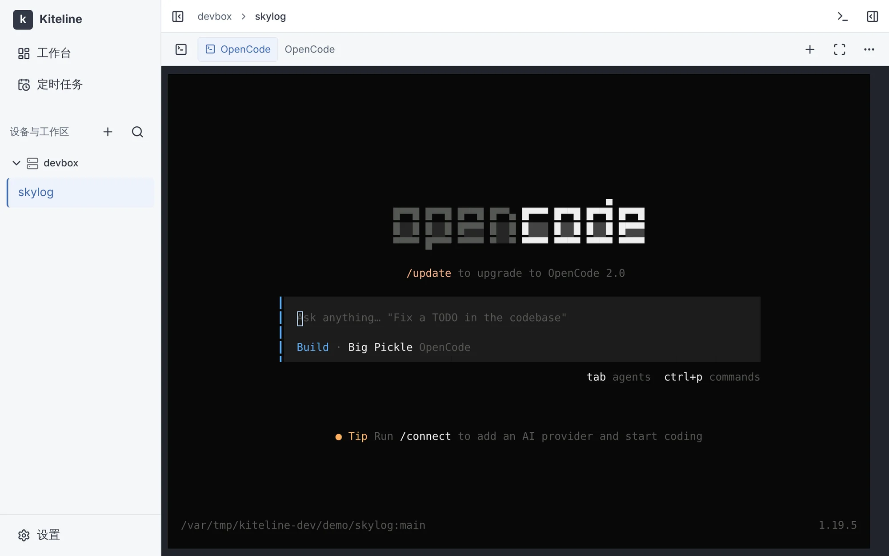
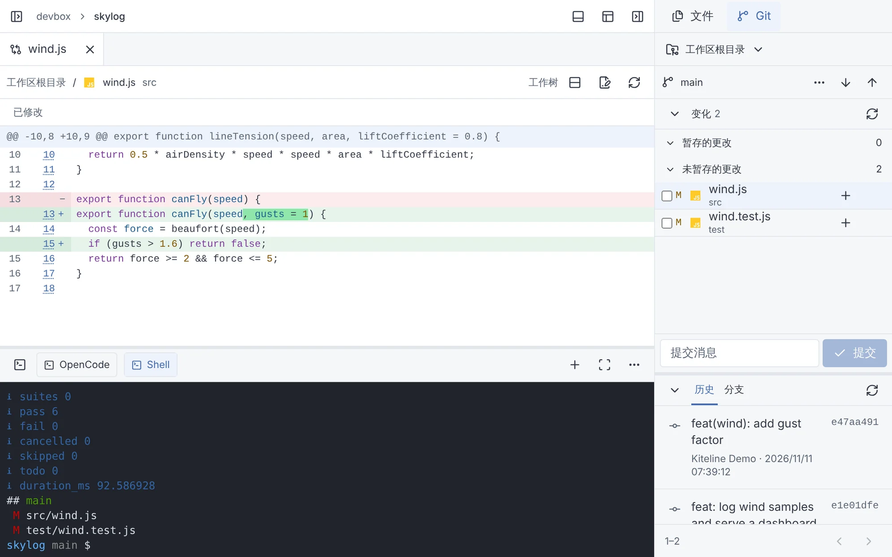
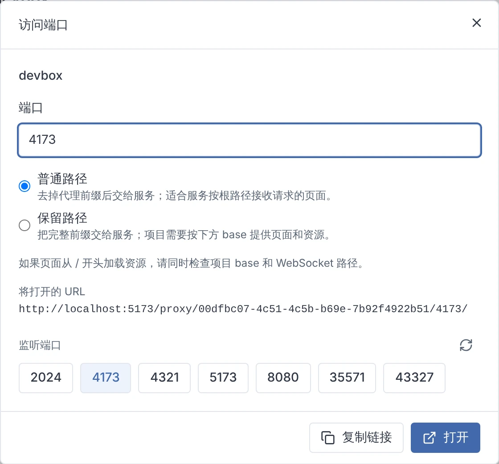
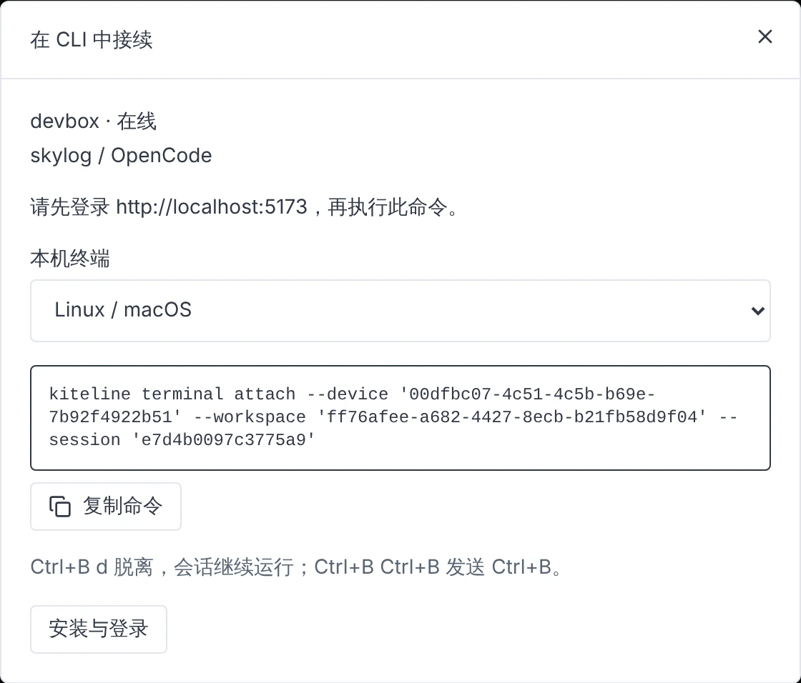
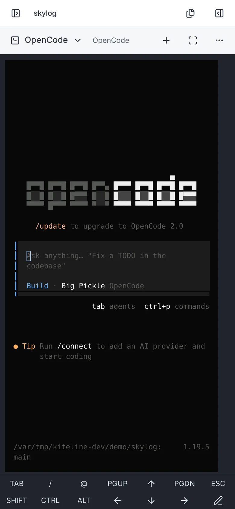
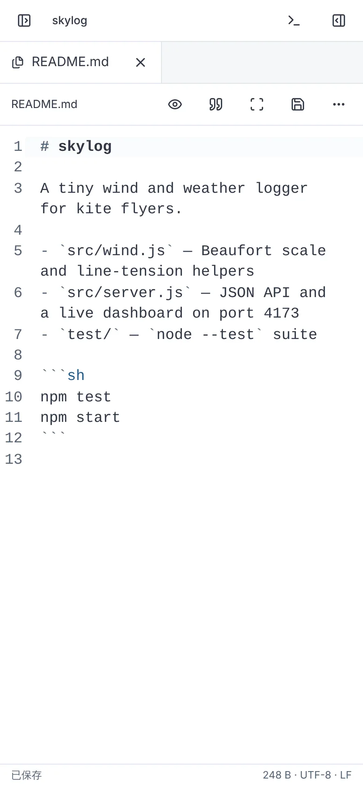
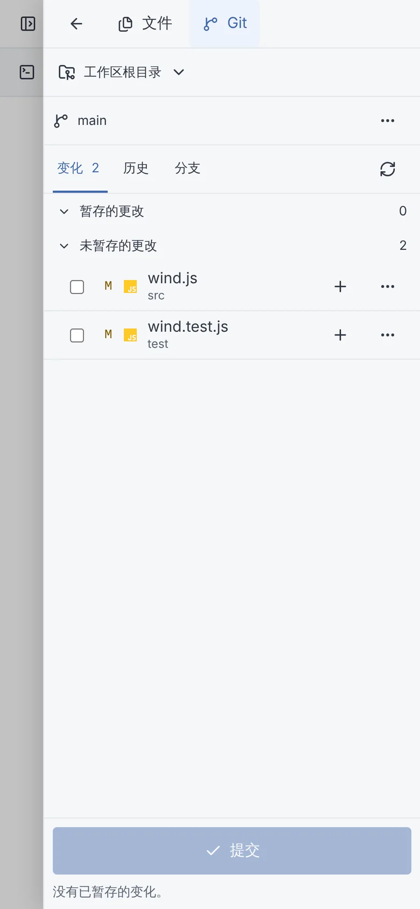

多设备与工作区
接入 Linux、Windows 与 macOS 设备，按项目切换工作区。
原生运行你已在使用的命令行工具
终端、文件与 Git 并列呈现。可随时观察 agent 的执行过程并审阅其改动，无需离开当前页面。




在电脑与手机之间切换时，会话持续运行。终端需要处理时会发出通知，周期性工作可交由定时任务执行。
接入 Linux、Windows 与 macOS 设备，按项目切换工作区。
程序主动发出的通知与等待报告汇总于工作区列表，点击来源即可回到对应终端。
按 cron 计划在设备上运行脚本或 agent，并保留运行记录；agent 亦可自行创建任务。
移动端布局同样提供终端（含按键工具栏）、文件视图与 Git 面板。



浏览器仅与你部署的 server 通信；设备上的 agent 主动向 server 发起连接，设备无需开放入站端口。
一台安装了 Docker 的 Linux 主机即可运行 server。
开发设备需安装 Git 2.23+、所需 Shell，以及已登录的 coding CLI。
登录者拥有 agent 运行账户的文件与命令权限。
http://127.0.0.1:8080，使用日志中的初始化 token 设置密码。
$ mkdir kiteline && cd kiteline $ curl -fsSLO https://github.com/Azure99/kiteline/releases/latest/download/compose.yaml $ docker compose up -d $ docker compose logs server
mkdir kiteline && cd kiteline curl -fsSLO https://github.com/Azure99/kiteline/releases/latest/download/compose.yaml docker compose up -d docker compose logs server